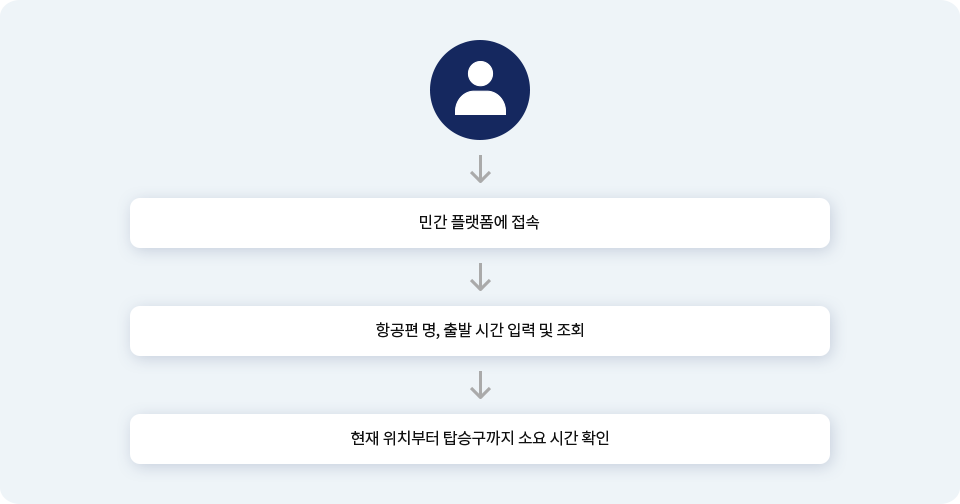
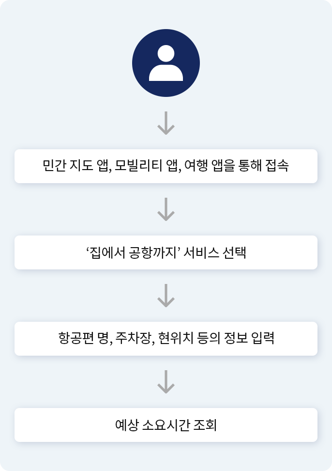

처음의 설렘이 끝까지 이어지도록,
여행의 시작을 함께합니다.
공항 내 소요시간 안내
처음의 설렘이 끝까지 이어지도록,여행의 시작을 함께합니다.
공항 내 소요시간 안내(Home to Airport)는 인천국제공항공사에서 관리하는 공항 내 소요시간 안내 서비스 입니다. 세계 공항 중 최초로 도입된 모바일 서비스로서, 인천공항 빅데이터 플랫폼에서 여객의 출입국 흐름과 터미널의 혼잡도, 체크인카운터 및 출국장 별 대기시간을 계산하여 가장 빠른 길을 실시간으로 안내해줍니다.
집에서 공항까지, 여행의 시작을 안내하며 셀렘을 함께합니다.
인천공항은 세계 최고의 공항으로 자리하기 위해 차별화되고 혁신적인 공항 서비스를 지속 개발하여 이용객들을 맞이합니다.
집에서 공항까지, 여행의 시작을 안내하며 셀렘을 함께합니다.
-
집에서 공항까지 시간 안내
국민들이 일상적으로 이용하는 앱을
통해 집에서 항공기 탑승구까지의
소요시간을 검색할 수 있습니다. -
공항 내 소요시간 안내
공항 주차장, 체크인 카운터, 출국장, 보안
검색대, 면세 구역부터 탑승 게이트까지의
소요시간을 안내받을 수 있습니다.
사용자 서비스 이용 프로세스
민간 채널을 통해 공항 내 소요시간 안내(Home to Airport) 서비스를 이용하는 사용자들은 다음과 같은 과정을 거치게 됩니다. 서비스를 이용하기 위해 개별적인 앱/웹을 설치해야 했던 기존의 방법에서 벗어나, 평소 친숙하게 사용하던 민간 앱을 이용해 프로세스를 시작하고 마무리할 수 있습니다.
 문의
dso_help@nia.or.kr